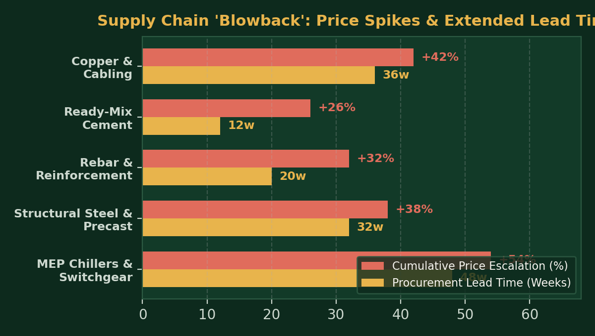
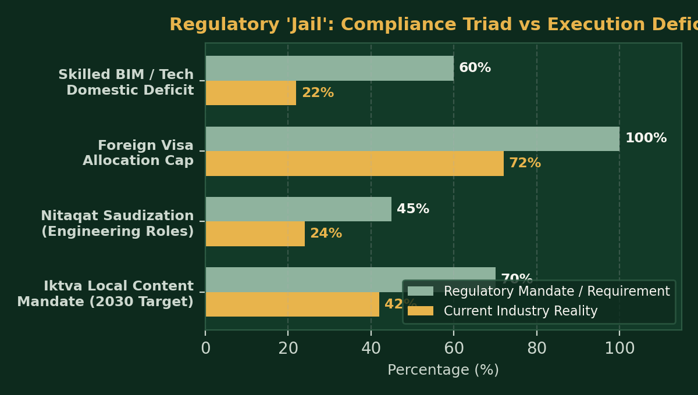
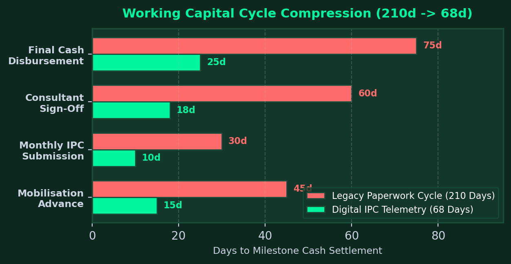

Chapter 4: Execution Bottlenecks & Delivery Headwinds
Navigating Supply Chain "Blowback", Regulatory "Jail" & The Operational "Dash"
In an unprecedented concurrent construction market exceeding $2.14 trillion, traditional capital project delivery models fail. Boardroom success requires diagnosing and mitigating three critical friction surfaces: Supply Chain Blowback, Regulatory Jail, and deploying The Operational Dash.
 Figure 4.1: High-specification industrial process infrastructure where procurement lead times and technical compliance dictate delivery success.
Figure 4.1: High-specification industrial process infrastructure where procurement lead times and technical compliance dictate delivery success.
flowchart TD
subgraph Friction ["The Triad of Execution Friction"]
R1["1. Material 'Blowback'<br/>Price Escalation & 48w Lead Times"]
R2["2. Regulatory 'Jail'<br/>70% Iktva, Saudization & Visa Ceilings"]
R3["3. Working Capital Freeze<br/>Extended Milestone Certification Lags"]
end
subgraph Resolution ["Forward Deployed Engineering Controls"]
S1["Early Procurement & Commodity Indexation"]
S2["Domestic Value Retention & Local Up-skilling"]
S3["Automated Digital IPC Sign-Offs (68-Day Flow)"]
end
subgraph ControlTower ["The Operational 'Dash'"]
DASH["Forward Deployed AI Control Tower<br/>Primavera P6 Reconciliation & Real-Time BIM Clash Telemetry"]
end
Friction --> Resolution
Resolution --> ControlTower4.1 Supply Chain "Blowback": Material Volatility & Lead Times
The concurrent execution of dozens of megaprojects has caused acute supply chain congestion across basic and specialized materials.

The Real-World Impact on Contract P&Ls:
- MEP Switchgear & Chillers (+54%): European and Asian factory backlogs have pushed lead times from 16 weeks to over 48 weeks. Contractors unable to issue early purchase orders face massive site idle penalties.
- Structural Steel & Rebar (+38%): Massive foundation works in Riyadh and the Red Sea have driven domestic rebar rolling mills to 100% capacity utilization.
- The Lump-Sum Trap: Traditional Lump-Sum Turnkey (LSTK) contracts without commodity escalation clauses risk eroding 500 to 800 basis points of contractor EBITDA, pushing Tier-1 contractors into negative cash flow cycles.
[!WARNING] Commercial Authority on Procurement Risk Never sign fixed-price LSTK agreements for long-lead mechanical and electrical equipment in KSA without mandatory price indexation pegged to London Metal Exchange (LME) and ICIS petrochemical benchmarks.
4.2 Regulatory "Jail": Quotas, Local Content & Visa Caps
The regulatory landscape in Saudi Arabia is uncompromising. Companies attempting to execute projects using legacy expatriate labor models encounter severe compliance tripwires.

The Statutory Compliance Triad:
- Iktva 70% Local Content Mandate: Sovereign developers (PIF entities, Aramco, Ministry of Transport) require contractors to spend 60% to 70% of contract value within the domestic Saudi economy by 2030. Bids lacking verified local supply chains are disqualified at the commercial gate.
- Nitaqat Saudization Quotas: Strict nationalization quotas apply to white-collar roles (Project Directors, Lead Engineers, HSE Managers, QA/QC Inspectors). Companies failing to maintain "Platinum" or "High Green" status face frozen municipal permits and portal access.
- Visa Allocation Ceilings: Government authorities strictly govern foreign worker quotas to incentivize local vocational training, prefabrication, and automated off-site construction methods.
[!IMPORTANT] Local Content (Iktva) Requirement Sovereign developers now mandate a minimum 60% domestic spend score. Bids without verified in-kingdom assembly, local fabrication, or structured Saudi graduate training pipelines face immediate technical rejection.
4.3 Contractor Cash Flow Friction & Working Capital
The extended duration and complex governance hierarchies of multi-billion-dollar packages represent historic drivers of liquidity stress across Tier-2 and Tier-3 subcontractors:

[ Physical Work Complete ]
│
▼ Legacy Paperwork Cycle (210 Days Total)
[ Paper Milestone Claim ] ──► Manual Site Verification ──► Multi-Tier Audit ──► Ministry Disbursement
│
▼ Digital Operational Flow (68 Days Total - 68% Compression)
[ Drone & BIM Verification ] ──► Real-Time As-Built Match ──► Digital IPC Sign-Off ──► Immediate Cash Release
- Legacy Paperwork Cycle (210 Days): Submitting paper Interim Payment Certificates (IPCs), awaiting third-party engineer sign-off, client audit, and ministry disbursement historically consumed 7 to 8 months.
- Digital Flow Compression (68 Days): Implementing digital quantity takeoff, automated drone survey progress verification, and electronic milestone sign-offs compresses the payment cycle to 68 days, unlocking critical working capital across the supply chain.
4.4 The Operational "Dash": Forward Deployed AI & Real-Time Control
To break out of regulatory constraints and eliminate supply chain friction, market leaders deploy The Operational Dash—a real-time engineering control tower:

[ Physical Site Telemetry ]
│
▼ Drone Photogrammetry, CCTV & LiDAR Scans
[ AI Telemetry Engine ] ──► Cross-correlates against Oracle Primavera P6 Baseline
│
▼ BIM Clash & Critical Path Engine
[ Exception Detector ] ──► Identifies 14-day slip in MEP riser conduit path
│
▼ Automated Commercial Action
[ Operational Dash ] ──► Issues accelerated IPC sign-off and adjusts procurement window
Verified Operational Capabilities:
- P6 Schedule Telemetry (65% Variance Cut): AI agents continuously parse daily site logs, delivery manifests, and drone imagery to cross-validate progress against Oracle Primavera P6 baseline schedules, highlighting critical path delays 30 days before they manifest on site.
- BIM Clash Pre-emption (80% Rework Cut): High-precision LiDAR and computer vision scans detect MEP routing conflicts against 3D Revit models before concrete pours occur.
- Dispute Resolution Speed (85% Faster): Verifiable digital ledger telemetry provides an immutable source of truth, resolving contractor claims and delay penalty disputes in weeks rather than multi-year litigation.
[!TIP] AZ Consultants Forward Deployed Recommendation Position on-site Forward Deployed Engineering (FDE) pods equipped with autonomous schedule-to-BIM reconciliation to cut certification lags from 90 days to under 14 days, directly improving subcontractor retention and site productivity.